MIPI D-PHY
概況:
支援型號:
| BF6264B | BF7264B | BF7264B+ | BF7264 Pro |
|---|---|---|---|
| ● | ● | ● |
BF7264B/B+/Pro產品正面有兩個USB孔
除主機可繼續使用原BF6264B功能外，增加MIPI D-PHY分析儀功能。
MIPI D-PHY方案，規格內容如下:
- BF7264B/B+/Pro，32Gb RAM，搭配MIPI D-PHY探棒組
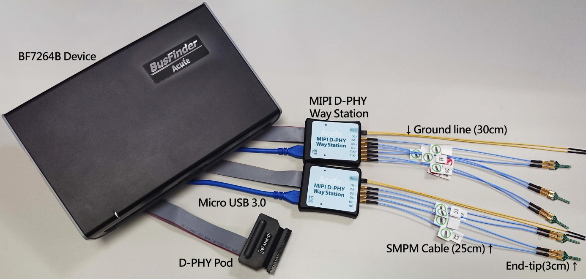
- 支援 D-PHY V1.2 Up to 2.0Gbps per lane，1 + 4 Lanes

- 可顯示 CSI-2 1.3 或 DSI 1.3 協定封包資料以表格方式呈現，包含DSI中的DCS 1.3指令解析

- 使用32Gb RAM搭配硬碟串流來儲存D-PHY通訊資料，可完整節錄待測物從Low Power Mode初始化到High Speed Mode的流程
- 可擷取資料量 (以未啟用硬碟串流來估算)
| 解析度 | 可擷取影像量 | 備註 |
|---|---|---|
| 1K (FHD 1080x1920) | 約500 frames | |
| 2K (WQHD 1440x2560) | 約280 frames | |
| 4K (UHD 2160x3840) | 約120 frames | 需要8 Lane或是4 Lane帶有DSC壓縮 |
| 8K (4320x8192) | 不支援 | 不支援 |
- 提供Data Filter功能，可將不必要的影像資料濾除以節省記憶體
- 提供Search資料功能
- 提供 ECC/CRC Packet 計算及錯誤顯示
- 可顯示DSI、CSI影像資料，包含RGB、YCbCr、RAW格式，以及壓縮的DSC 類型之封包，並統計Porch數據。詳細資訊請參考附錄二。
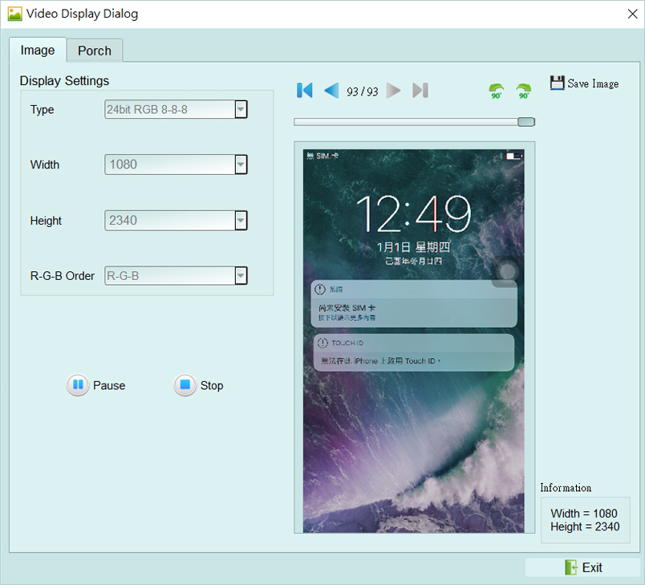

- D-PHY命令統計功能，包含封包總數、各別指令數量、以長度分類的指令統計以及錯誤數量統計

- D-PHY 命令觸發功能
- 觸發參數包含命令與參數資料可輸入32 bytes的資料做為觸發條件。
- 可涵蓋所有Short Packet，以及大部分非影像資料的Long Packet
-
Short Packet長度4bytes Header Long Packet長度4bytes Header + 28byte Data
- 可觸發CRC/ECC Error
- 可透過Trigger-Out接孔同步觸發外部的示波器
- TE通道偵測 (Tearing Effect)
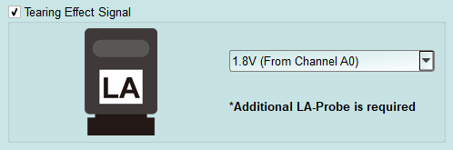
- 可偵測螢幕所發送TE訊號, 須加購LA Probe方能使用此功能。
- 詳細說明請參考附錄一。
FAQ
- 支援MIPI DSI第幾版的規格，是否有Differential對數或port數限制呢?
- A: 支援到D-PHY V1.2，最高2.0Gbps per lane，1 + 4 Lanes。
- 是否有支援C-PHY解碼呢?
- A: 不支援C-PHY解碼，亦無開發計劃。
- 是否支援DSI-2?
- A: 不支援，本產品無法量測DSI-2規格內的C-PHY訊號，同時也不支援DSI-2的
- VDC-M影像壓縮格式。
- 量測時是否會影響訊號品質?
- A: 外接的儀器量測必然會有部分的負載效應影響，我們這邊採用End-tip搭配SMPM Coaxial Cable的連接方式來降低對待測物干擾並提升訊號品質。
-
是否有支援訊號發送 (Tx) 功能? A: 不支援訊號發送功能
-
主機與探棒如何連接?
- A: 主機僅能使用Slot B作為探棒連接槽，並注意主機前端的兩個USB插槽也需要連接至Way Station上，且上方USB對應Top Way Station，下方USB對應Bottom Way Station，不可接錯，否則將無法量測。連接後請注意兩個Way Station燈號是否皆有亮起紅燈跟綠燈各一。
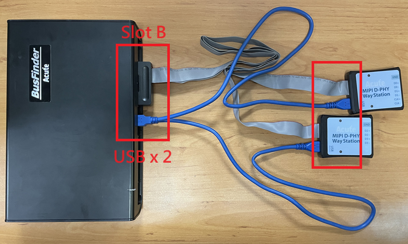

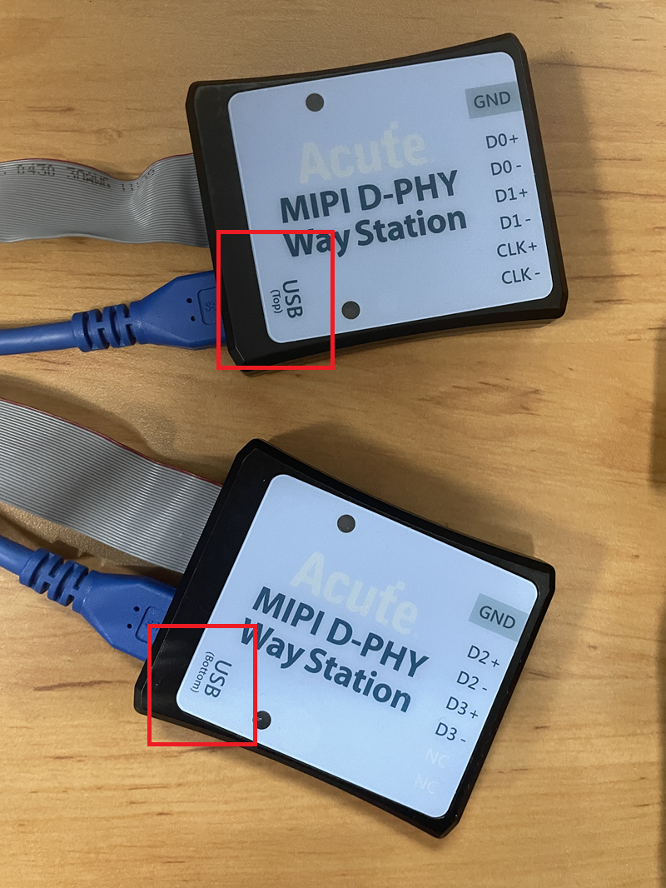
- 探棒與待測物如何連接?
-
A: 焊線:
-
軟板FPC End-tip:
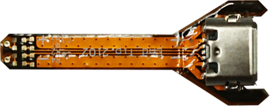
-
(請勿過度彎曲，避免軟板內部斷路) 使用End-tip以跳線的方式連接待測物，此時跳線長度必須少於5mm 以提升訊號品質。
-
若無法將跳線長度縮短在5mm內，建議在待測訊號端先焊接100Ω電阻，再從該電阻後跳線接至End-tip上，如此跳線可拉長至3cm左右。
- 步驟一: 先將SMPM-SMPM cable接上End-tip，確認有定位聲。 步驟二: 再進行跳線焊接，這樣可避免焊接好之後插上SMPM Cable時影響跳線。
※ End-tip的R1/R2電阻是1kΩ/0402，若焊線時不慎損毀，可自行替換。
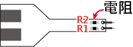
- 將R1, R2焊上表中相對應之電阻, C1焊上對應之電容, 並依照FPC End-tip之步驟完成與待測物之連接
| CLK | FPC End Tip |
|---|---|
| < 800Mbps | |
| >= 800Mbps 標配 |
user-tip: 客戶自行依待測物形態設計專屬的End-tip，只需用1kΩ連接待測訊號再以
50Ω特性阻抗的PCB trace接往SMPM plug即可，之後便可用user-tip取代End-tip，將SMPM-SMPM cable接到user-tip便可。
使用Breakout方式連結: 自行設計EV board使用SMPM Connector連接Acute
- MIPI D-PHY Analyzer將PCB板上的D-PHY Host與Device連接斷開後改為上方的結構，左側接回到D-PHY Host，右側則接到MIPI D-PHY Device。設計時PCB上面的R1/2/3盡量接在一起，並使用50Ω特性阻抗之走線, 完成後便可於下方使用SMPM Connector連接Acute MIPI D-PHY Analyzer進行量測。
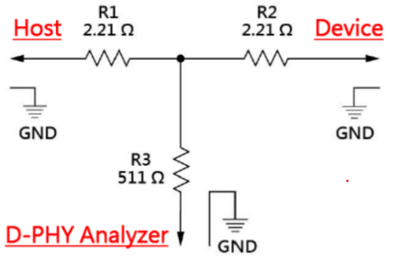
- 在跳好線之後，想用三用電表確認是否有短路發生，實際量了似乎有短路的現象，如何釐清?
- 接線如下圖，

- 在地線接好之後，包含整個Way Station、Probe 都接好，並先將BusFinder斷電。
- 量測點A: End-Tip電阻前端對地，綠色線==>電表不響。
- 量測點B: End-Tip電阻後端對地，紅色線==>電表會響，是否表示有焊接問題，造成短路發生?
- 量測點B電表會響為正常現象，是因為電阻後端對地只有50Ω，阻抗低，一般電表測短路功能一定會響。測量時，只要前端1.05 KΩ處對地不會響，這樣就沒有短路問題發生。
- 待測物如何接地?
- 由於設備與待測系統仍需共地，因此可先將Way Station上的GND Port連接至待測物的GND即可，兩個Way Station都要接。
- 除非訊號品質太差或干擾太大，分析之後發生較多的錯誤時，則可改為每個End-tip都接地的效果最好。
- 有指令某個Command 或 Data type 做為 trigger 點的功能嗎?
- A: 可以指定特定的Data Type / DCS或是Error進行觸發。
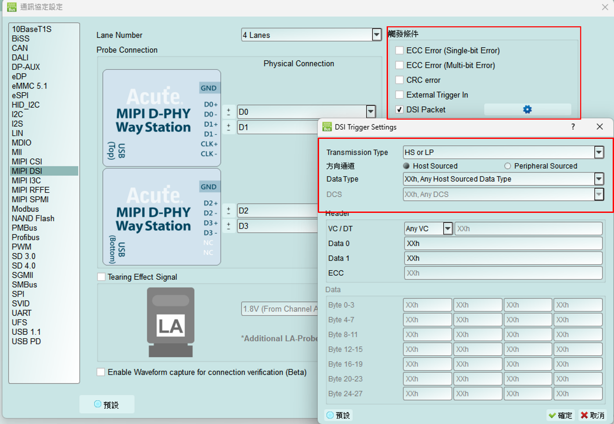
- 是否可以自行設定一個HS/LP起始點(例如DCS CMD),指定抓取多少時間內的Data?
- A: 可以將起始條件設定在觸發項目後，到工作模式選單內調整為資料監控儀模式，
- 並指定擷取時間長度。
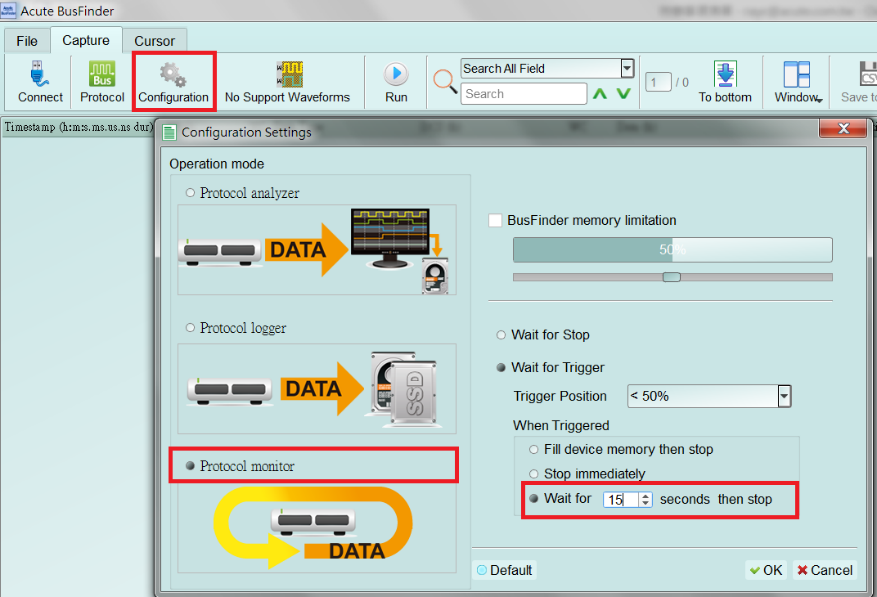
附錄一: Tearing Effect Signal
Tearing Effect (TE) 腳位訊號量測
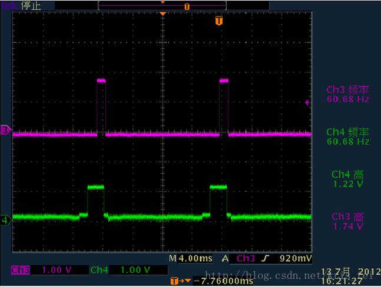
(圖片來源: https://blog.csdn.net/kris_fei/article/details/77775553)
TE腳位是顯示屏用來告知Host, 目前屏幕圖形繪製中, 不可以更新資料, 若在TE = High的情況更新屏幕, 則影像上會出現水平斷裂線, 此功能可以清楚的辨識出沒有依照TE狀態操作的指令, 減少猜測問題點以及另外架設示波器來驗證所需的時間
TE功能需要使用者多添購一組LA Probe才能支援, 預設從通道0輸入, 支援3.3V以及 1.8V兩種工作電壓模式, 設定畫面如下,
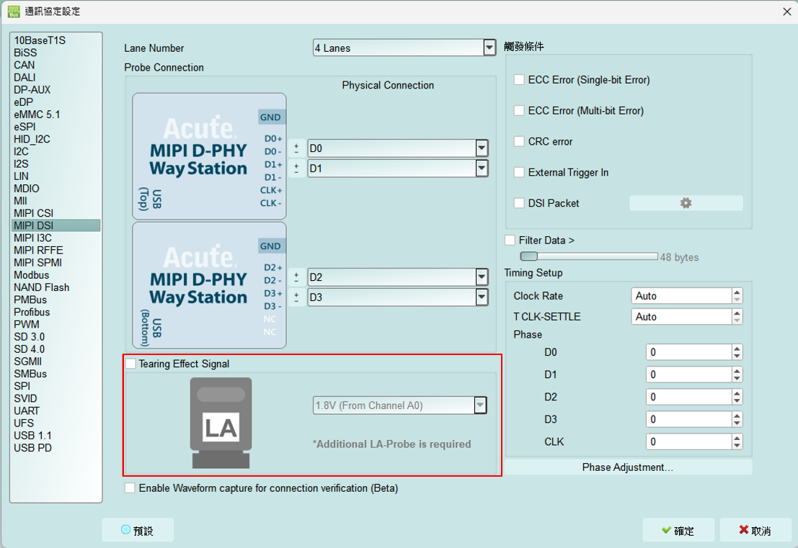
實際擷取畫面:

附錄二: 影像還原功能
點選視窗->Video Display Dialog, 可開啟影像還原功能,
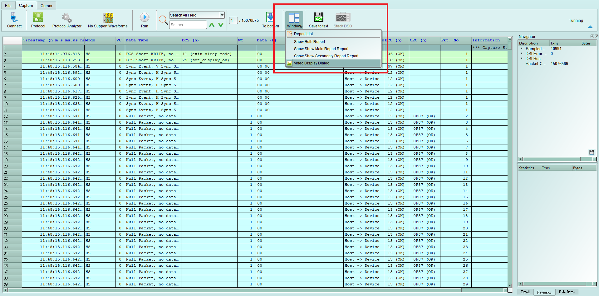

請設定待測物送出的DSI, CSI格式, 解析度, RGB order, 再按下Process即可開始還原影像,。另提供部分解析功能, 若待測物僅更新部分螢幕時, 可將此項勾選, 將顯示部分更新內容。
影像還原實例:
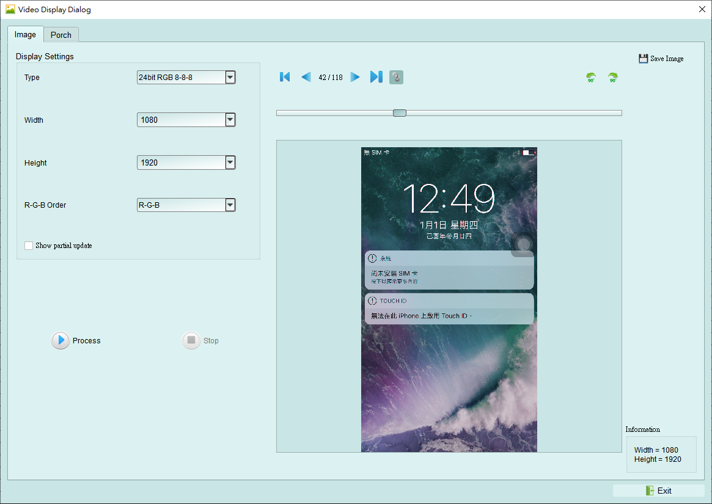
並提供與主報告區之資料作連動功能, 方便找尋影像資料位置。
Save Image可將還原影像以 .jpg / .bmp / .bin 方式輸出。
DSI若以Video mode傳送影像資料, 也有提供Porch功能可統計每張影像所送出的格式,
可統計VSA, VBP, VFP, HBP, HFP, image的功能
若選擇TYPE – DSC還原, 使用DCS Command請選擇DSC Command mode, 若使用VSync, HSync格式請選擇DSC Video mode, 並請給定PPS檔案(格式為.txt), 才能還原。 PPS亦會隨著Picture Parameter Set (0A)指令替換。
附錄三: 無法量測/僅量測到LP mode訊號/大量錯誤產生解決方法:
Step 1: 請檢查探棒與主機間的2條USB是否有沒接好或接觸不良問題
- 將主機端與WayStation端的USB拔除再重新插回 Step 2: 請檢察Lane/CLK的焊線是否有在規定內之5mm內, 並確認每個End-tip都有接上Gnd,
Step 3: 開啟波形檢視功能並送出HS訊號, 用以確定接線正常,
Step 3.1: 開啟波形檢視功能
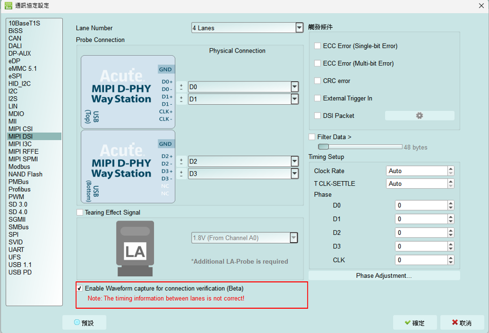
Step 3.2: 切換模式, 使用Protocol Monitor mode並縮小記憶體,
若後續解決問題, 再切換回Protocol Analyzer mode

Step 3.3: 開啟波形視窗
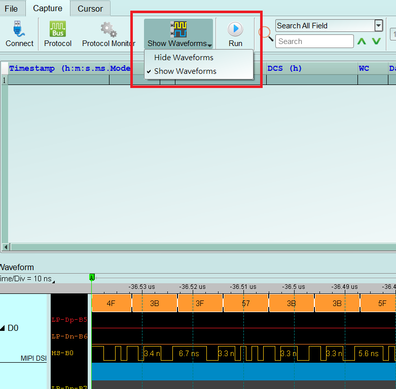
Step 3.4: 擷取波形
Step 3.5: 分析是否有HS訊號, 紅色箭頭”前”波形為LP, “後”則為HS訊號, 請找到相似位置並將其波形放大檢視, 若重複擷取數次仍無法找到LP, HS波形或有少Lane/CLK的情況, 可能原因為Lane/CLK沒接通, 請見FAQ第七點,
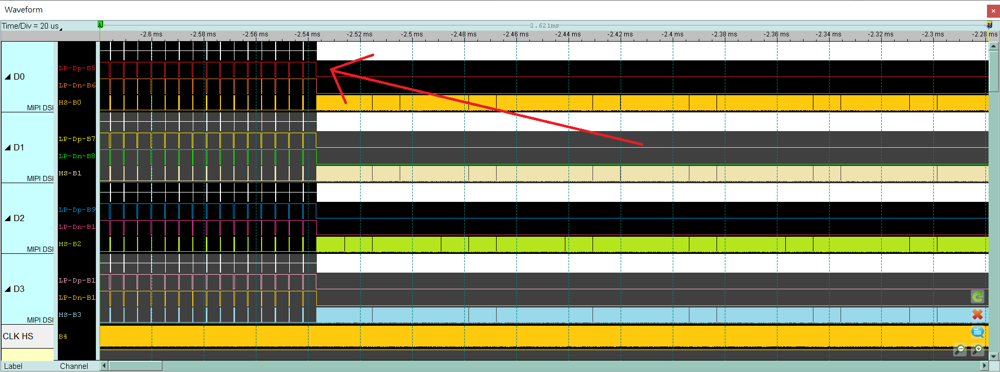

Step 3.6: 確認CLK Duty是否為50:50, 並檢查HS SYNC 1D後方之Lane 0-3的每一個edge寬度, 正常為半個CLK cycle的寬度或其倍數, 如非正常, 請再次檢查焊線是否符合規定,
若符合規定, 仍會有雜訊或是CLK Duty問題, 請繼續縮短焊線長度, Gnd也就近引入,
Ex: CLK duty不好情況, 65:35, 1.4ns:0.8ns

Ex: Lane 0, Lane 3不為半個CLK cycle的寬度
Half CLK cycle = (1.4 + 0.8) / 2 = 1.1 (ns)
正常的Data波形約1.1ns或其倍數

附錄四: 還原影像列表

- Video mode - 1125 * 2436
2. CMD mode – 1125 * 2436
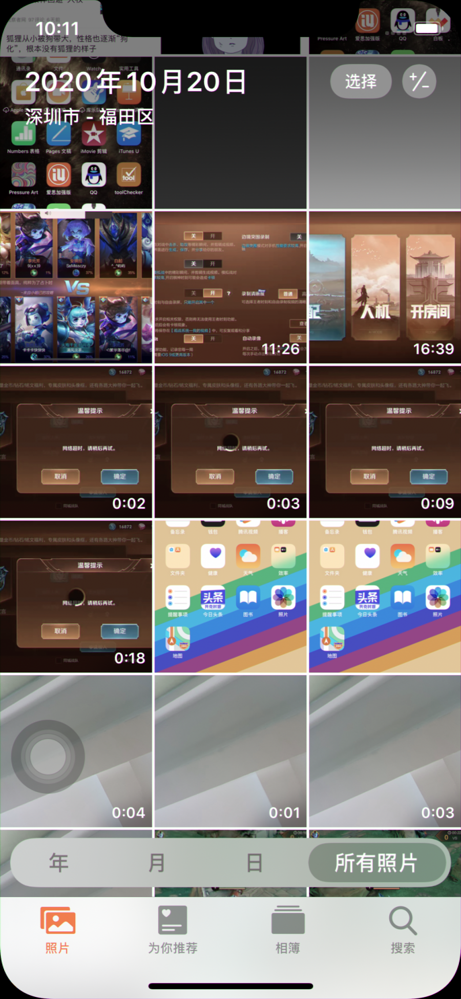